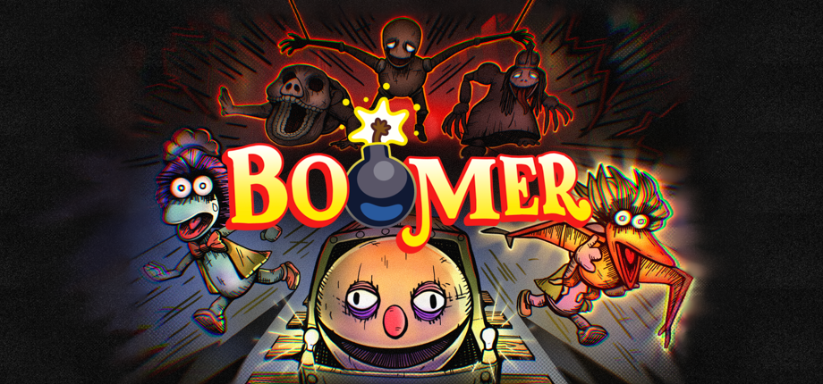
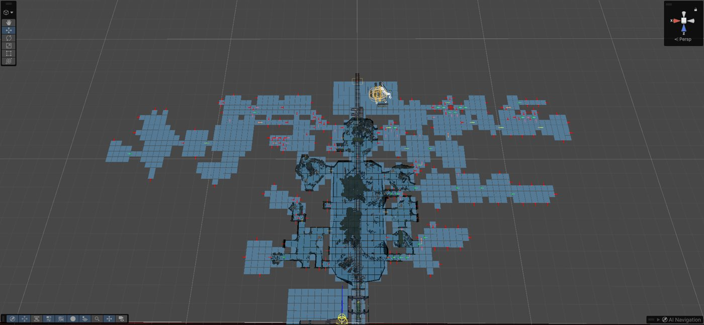
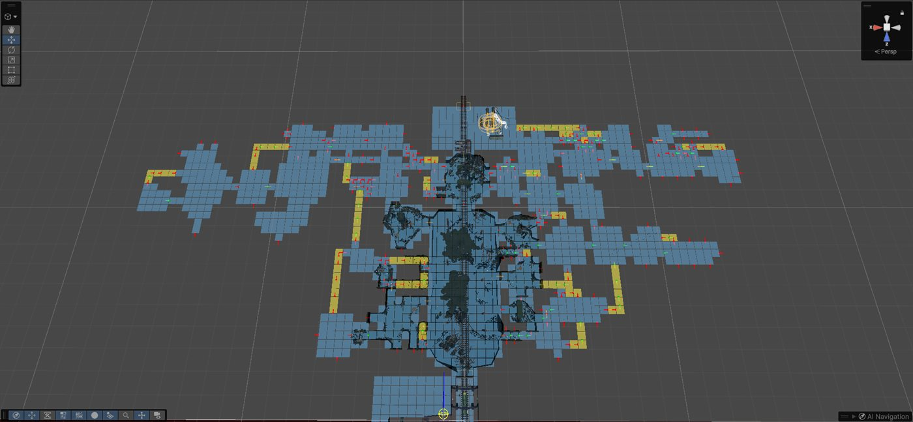
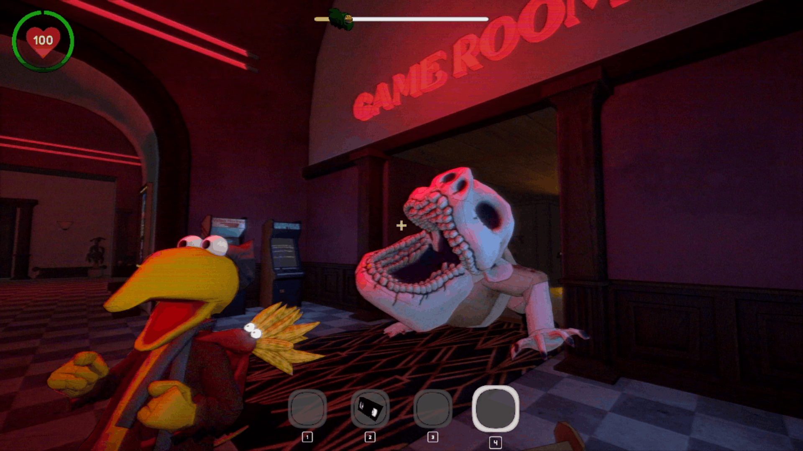
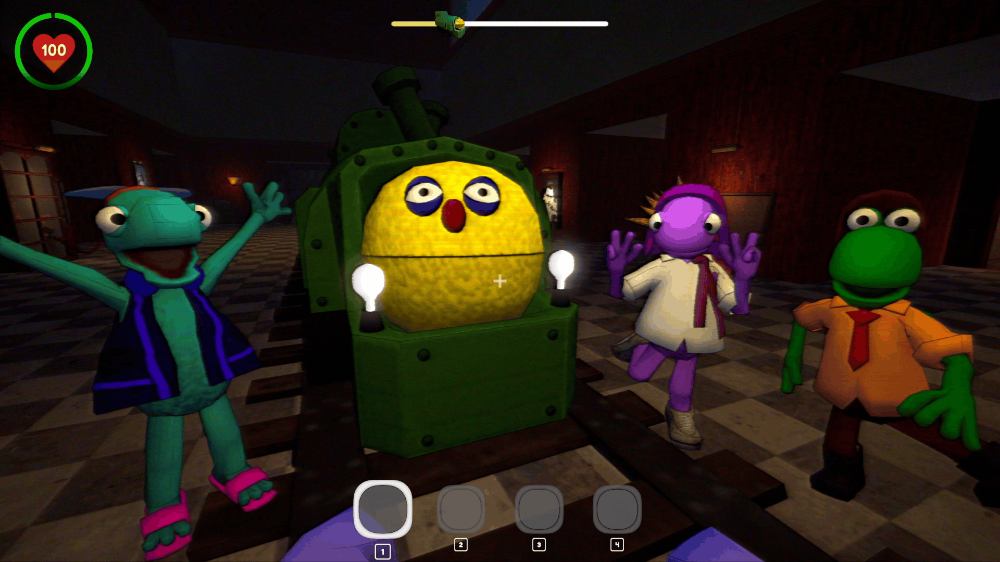
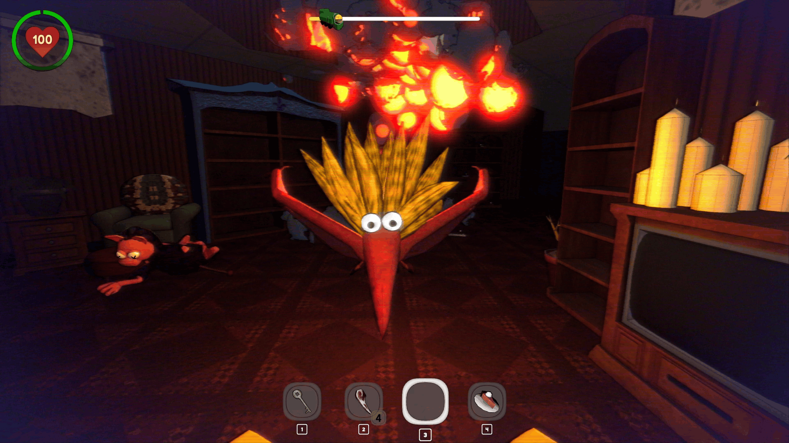
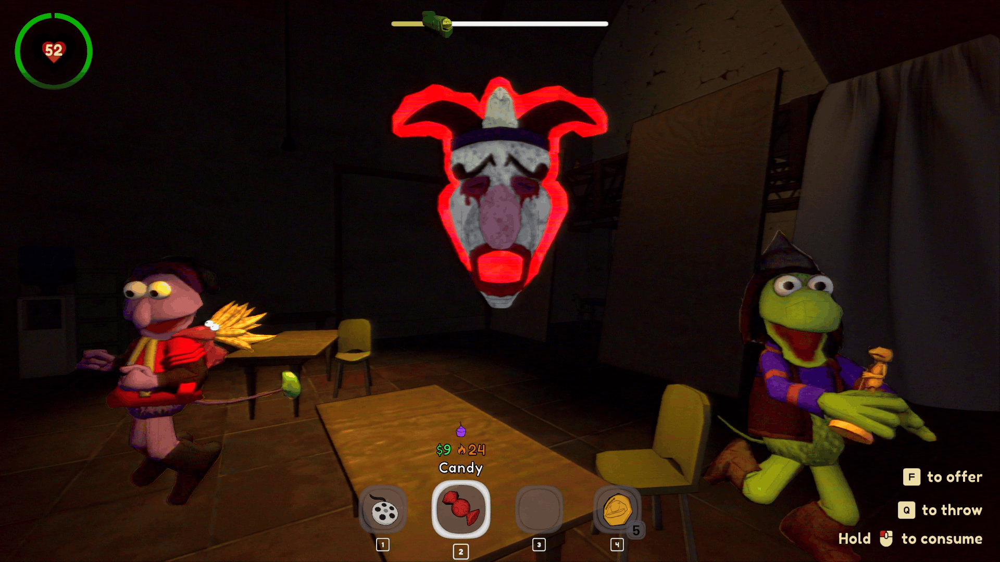

2026 · Team project
BOOMER
A chaotic co-op horror game for up to 6 players. Scavenge eerie environments, feed your loot to a hungry steam engine, and pass Boomer between teammates in a deadly game of hot potato.

Procedural Dungeon Generator
BOOMER required the creation of a networked, randomly generated dungeon. The server picks a seed and broadcasts it to clients, then every machine generates the same dungeon locally.
This complex generation setup consists of about 7,500 lines of C# across several classes. I also setup a culling manager to handle per-room rendering to save on performance (rooms behind the player and out of view get culled).
Grid painting tool
Odd-shaped rooms were hogging space they didn't use.
The generator treated every room as a perfect square, so L-shapes and narrow rooms reserved empty tiles around them. I built an editor tool that lets designers click tiles in the scene view of any room prefab to switch them on or off. Trimming the tiles a room doesn't actually occupy frees up space for the generator to place more rooms and hallways.
Branch interconnection pass
Every side route was a dead end.
Branch rooms grow outward from the main path like a tree, so players had to walk back the way they came, with nowhere to loop around or escape a chasing monster. After the branches are placed, a post-pass checks every pair of open, unused exits on the level. Wherever two can be joined cleanly, it builds a hallway between them, turning the tree into a graph with loops.


Yellow tiles: hallways added by the interconnection pass.
Door-Aware Enemy Pathfinding
Some enemies in BOOMER can open doors, and some can't. Each enemy had to path according to its own abilities, inside procedurally generated levels where door states change at runtime.
The usual approach: NavMesh carving
Carving treats every enemy the same.
Normally each door cuts a hole in the NavMesh while it's closed. But carving applies to every agent equally, so it can't express "this enemy can get through and that one can't." It also rebuilds the NavMesh at runtime on every door change, which is expensive.
What I did: doors as NavMesh areas
Each enemy filters out the doors it can't use.
Each door prefab has a marker volume that the level's NavMesh bake stamps as a
Doorway area. Each enemy then filters out the areas it can't use with a
bitmask. The pathfinder does the rest: enemies that can't get through a door route
around it, or stop at it if it's the only way.
agent.areaMask = _defaultAreaMask;
if (!canOpenDoors) ExcludeAreaFromMask("Doorway");Result
One NavMesh bake per level, with no expensive runtime rebakes or carving. Each enemy's door abilities come down to two Inspector checkboxes, and the pathfinder handles the rest.



